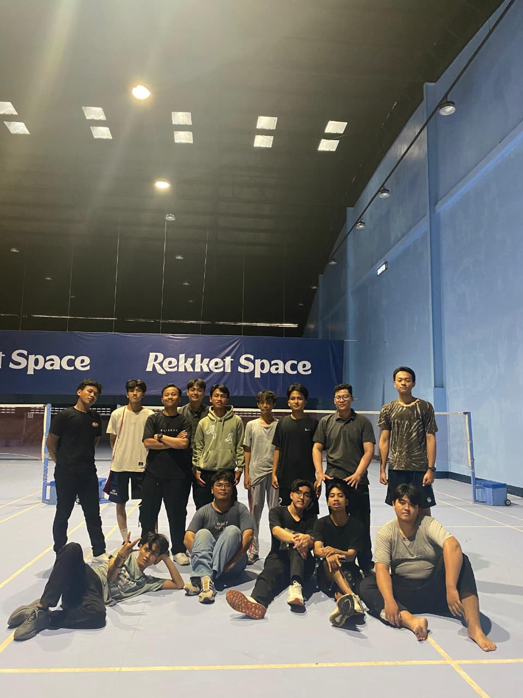

UNIVERSITAS TADARUSAH
SANRIS
TANGERANG
Berdirinya Universitas Tadarusah berawal dari sebuah pusat pelatihan keterampilan (Lembaga Pendidikan Sanris) yang didirikan pada tahun 1998 oleh para tokoh pendidikan di Tangerang. Melihat kebutuhan akan pendidikan tinggi yang berkualitas namun terjangkau, Yayasan Sanris secara resmi bertransformasi menjadi Universitas Tadarusah pada tanggal 12 Januari 2012.
Nama "Tadarusah" dipilih untuk melambangkan semangat "belajar bersama secara berkelanjutan". Sejak saat itu, UNTADAR terus berkembang dari hanya memiliki dua fakultas menjadi universitas komprehensif dengan fasilitas modern yang mendukung riset dan pengabdian masyarakat.

Komitmen kami untuk pendidikan berkualitas
Menjadi universitas unggul di tingkat nasional pada tahun 2035 yang menghasilkan lulusan berintegritas, inovatif, dan mampu beradaptasi dengan perubahan teknologi global.
Menyelenggarakan transformasi pendidikan tinggi yang terintegrasi melalui riset inovatif dan pengabdian masyarakat yang berbasis kemitraan strategis untuk mencetak sumber daya manusia unggul yang solutif bagi tantangan global.
Menanamkan kejujuran profesional dan etika medis tinggi bagi setiap calon Refraksionis Optisien.